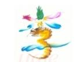

鲁虺在线花鸟字生成器
鲁虺花鸟字生成器

在下面↓输入框输入文字
| 输入文字： |
在下面↓输入框输入文字
| 输入文字： |
花鸟字生成器：收集了7000多个花鸟字效果，目前是收录最多的版本，我们也在不断的更新，目的是为了发扬中国传统的的花鸟字，让中国花鸟字发扬光大。
民间花鸟字，又叫龙凤字、多彩花鸟虫鱼组合书法、藏字画，它利用特制的多彩画笔，一气呵成，能快速绘出简洁的物形、螺线等代替文字的笔画，利用字里藏画的结构形式，巧妙地融字、画于一体，表达出吉祥喜庆等多种效果，同时又增强文字的意趣及视觉的吸引力。飞龙、舞凤、花草、小鸟、蝴蝶、鱼儿相映成趣，令人百看不厌，有“书法家难起笔，画家难润色”之说，是中华民族历史文化百花园中的一枝奇葩。
花鸟字画法： 花鸟字绘画方法
Copyright © 2004-01-11 luhui.net all rights reserved.